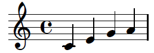
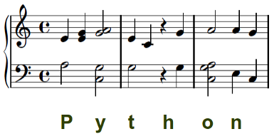

Previous Chapter: Python, SQL, MySQL and SQLite
Creating Musical Scores With Python
Introduction
In this chapter of our Python course, we provide a tutorial on music engravings. We use Python to create an input file for the music engraving program Lilypond. Our Python program will translate an arbitrary text into a musical score. Each character of the alphabet is translated by our Python program into a one or more notes of a music piece.Lilypond
 Before we can start with the code for our Python implementation, we have to give some information
about Lilypond. What is Lilypond? The makers of Lilypond define it like this on lilypond.org:
Before we can start with the code for our Python implementation, we have to give some information
about Lilypond. What is Lilypond? The makers of Lilypond define it like this on lilypond.org:
"LilyPond is a music engraving program, devoted to producing the highest-quality sheet music possible. It brings the aesthetics of traditionally engraved music to computer printouts."
They describe their goal as following:
"LilyPond came about when two musicians wanted to go beyond the soulless look of computer-printed sheet music. Musicians prefer reading beautiful music, so why couldn't programmers write software to produce elegant printed parts?
The result is a system which frees musicians from the details of layout, allowing them to focus on making music. LilyPond works with them to create publication-quality parts, crafted in the best traditions of classical music engraving."
A simple example to get you started with Lilypond:
\version "2.12.3"
{
c' e' g' a'
}
Saving the Lilypond code above in a file called simple.ly, we can start Lilypond on a command shell:
lilypond simple.lyThis call creates the following output:
GNU LilyPond 2.12.3 Processing `simple.ly' Parsing... Interpreting music... Preprocessing graphical objects... Finding the ideal number of pages... Fitting music on 1 page... Drawing systems... Layout output to `simple.ps'... Converting to `./simple.pdf'...The result is saved in a pdf file "simple.pdf", which looks like this: 
We do not want to give a complete tutorial. We recomment using the Learning Manual
Using Python with Lilypond
 We write a program, which translates an arbitrary text string into a piece of music, which can be played on the piano. To this purpose every character of the Latin alphabet is mapped to two quarters of a four-four time, both for the left and right hand of a piano score.The image on the right side illustrates this with the String "Python". We use a pentatonic scale to ensure that the result will not sound too bad.
We implement the mapping with a Python dictionary:
char2notes = {
' ':("a4 a4 ", "r2 "),
'a':("<c a>2 ", "<e' a'>2 "),
'b':("e2 ", "e'4 <e' g'> "),
'c':("g2 ", "d'4 e' "),
'd':("e2 ", "e'4 a' "),
'e':("<c g>2 ", "a'4 <a' c'> "),
'f':("a2 ", "<g' a'>4 c'' "),
'g':("a2 ", "<g' a'>4 a' "),
'h':("r4 g ", " r4 g' "),
'i':("<c e>2 ", "d'4 g' "),
'j':("a4 a ", "g'4 g' "),
'k':("a2 ", "<g' a'>4 g' "),
'l':("e4 g ", "a'4 a' "),
'm':("c4 e ", "a'4 g' "),
'n':("e4 c ", "a'4 g' "),
'o':("<c a g>2 ", "a'2 "),
'p':("a2 ", "e'4 <e' g'> "),
'q':("a2 ", "a'4 a' "),
'r':("g4 e ", "a'4 a' "),
's':("a2 ", "g'4 a' "),
't':("g2 ", "e'4 c' "),
'u':("<c e g>2 ", "<a' g'>2"),
'v':("e4 e ", "a'4 c' "),
'w':("e4 a ", "a'4 c' "),
'x':("r4 <c d> ", "g' a' "),
'y':("<c g>2 ", "<a' g'>2"),
'z':("<e a>2 ", "g'4 a' "),
'\n':("r1 r1 ", "r1 r1 "),
',':("r2 ", "r2"),
'.':("<c e a>2 ", "<a c' e'>2")
}
The mapping of a string to the notes can be realized by a simple for loop in Python:
txt = "Love one another and you will be happy. It is as simple as that."
upper_staff = ""
lower_staff = ""
for i in txt.lower():
(l,u) = char2notes[i]
upper_staff += u
lower_staff += l
The following code sequence embeds the strings upper_staff and lower_staff into a Lilypond
format, which can be processed by Lilypond:
staff = "{\n\\new PianoStaff << \n"
staff += " \\new Staff {" + upper_staff + "}\n"
staff += " \\new Staff { \clef bass " + lower_staff + "}\n"
staff += ">>\n}\n"
title = """\header {
title = "Love One Another"
composer = "Bernd Klein using Python"
tagline = "Copyright: Bernd Klein"
}"""
print title + staff
Putting the code together and saving it under text_to_music.py, we can create our piano score on the command
with the following command:
python text_to_music.py > piano_score.lyThis will create a PDF file called piano_score.pdf.
Previous Chapter: Python, SQL, MySQL and SQLite